スマホ Android(Google Chrome)の方
手順１ Google Chromeを開き、画面の右上にあるメニューボタンをタップし、メニューの中から設定を選択します。
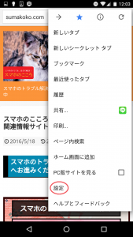
手順２ 開いた画面を下にスクロールし、「プライバシー」をタップします。
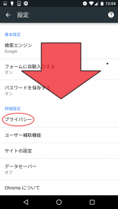
手順３ 開いたページを下にスクロールし、「閲覧履歴のデータを消去する」をタップします。
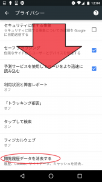
手順４ データを削除する期間を選択し、「閲覧履歴、キャッシュされた画像とファイル」にチェックを入れ、「データを消去」をタップします。
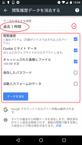
※それでも改善しない場合、「Gookieとサイトデータ」を選択し、こちらも削除してみてください。
スマホ Android(標準ブラウザ)の方
ハッピーランドを利用する上で、地球儀のマークの標準ブラウザはオススメしません。出来ればGoogle Chromeを利用して頂きたいですが、どうしてもという場合にこちらをご覧ください。
手順１ 地球儀のブラウザを開き、「メニュー」ボタンをタップし、現れたメニューの中から設定をタップします。
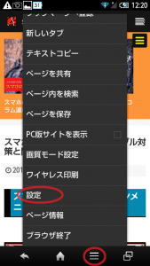
手順２ 「プライバシーとセキュリティ」をタップします。
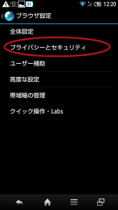
手順３ 「キャッシュを削除、履歴削除」を選択し、データの削除をします。
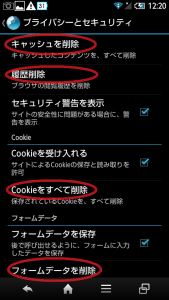
それでも改善しない場合、「cookieをすべて削除、フォームデータを削除」を選択して削除してみてください。
スマホ iPhone(Safari)の方
標準ブラウザがsafariですので、safariの設定の仕方を解説しますが、Google Chromeをお使いの方は上記のAndroid(Google Chrome)の方をご覧ください。
手順１ ホーム画面より「設定アプリ」をタップします。
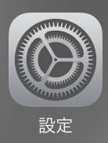
手順２ 開いた画面を下にスクロールし、「safari」をタップします。
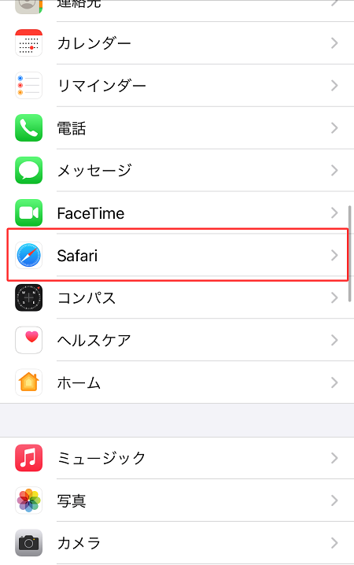
手順３ ヘージの下部にある「履歴とWebサイトデータを消去」をタップすると削除完了です。
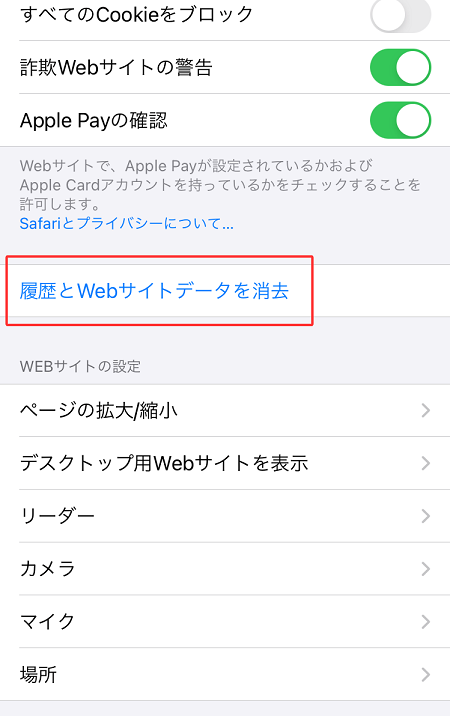
PC Google Chromeの方
手順１ Google Chromeを開き、右上の「Google Chromeの設定」をクリックします。
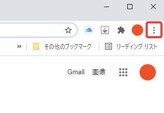
手順２ 開いたメニューから「その他のツール」→「閲覧履歴を消去」と選択します。
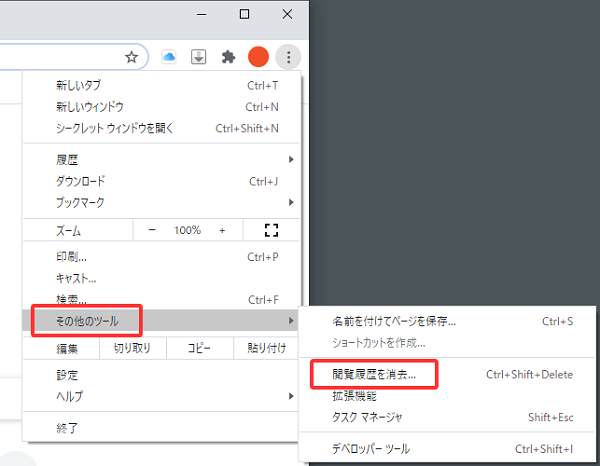
手順３ 期間を選択します。すべて削除するには「全期間」を選択してください。
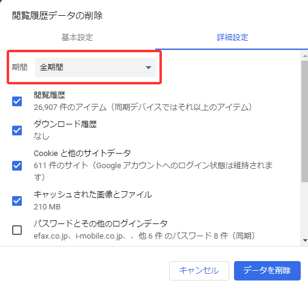
手順４ 「Cookieと他のサイトデータ」と「キャッシュされた画像とファイル」をチェックして、「データを削除」をクリックすると削除完了です。
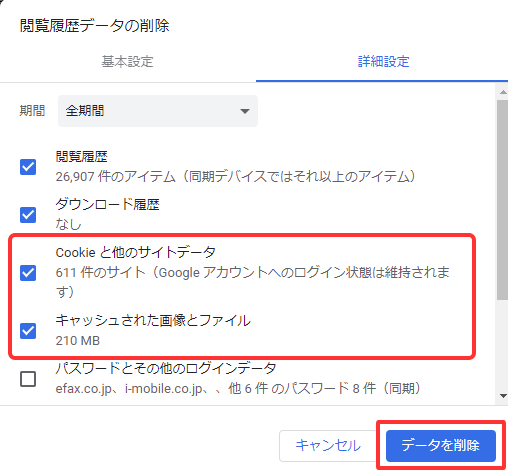
PC Internet Explorerの方
手順１ Internet Explorerを開き、右上の設定アイコンをクリックします。

手順２ 「インターネットオプション」を選択してください。
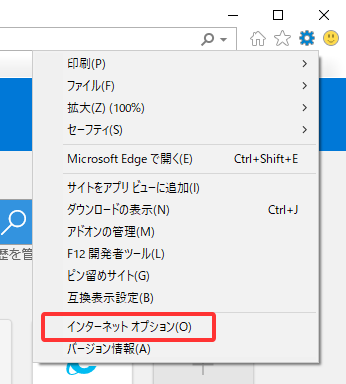
手順３ 「閲覧の履歴」から「削除」ボタンをクリックします。
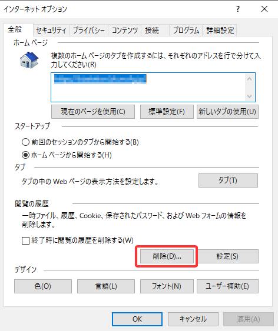
手順４ 「インターネット一時ファイルおよびWebサイトのファイル」をチェックし、「削除」ボタンをクリックすると削除完了です。
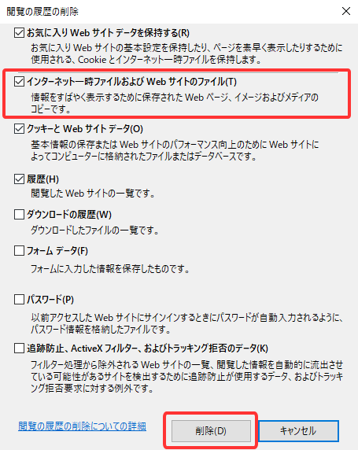
PC Firefoxの方
手順１ Fire Foxを開き、右上のメニューアイコンから「オプション」を選択します。
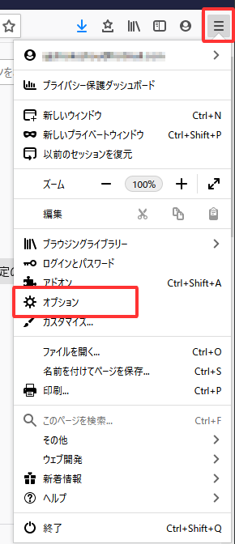
手順２ 左のメニューの「プライバシーとセキュリティ」を選択します。
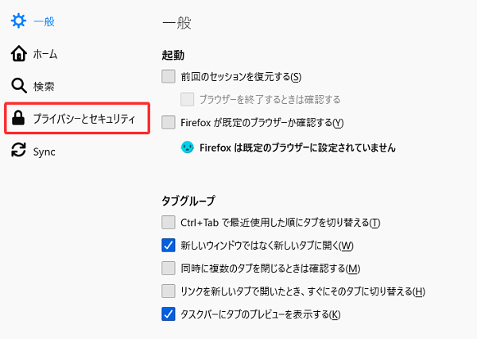
手順３ 「Cookieとサイトデータ」より「データを消去」をクリックします。
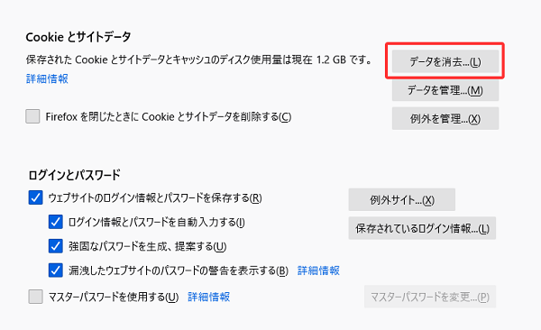
手順４ 「ウェブコンテンツのキャッシュ」にチェックを入れて「消去」をクリックすると削除完了です。
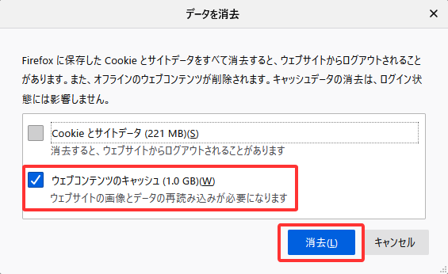
※それでも改善しない場合、「cookieとサイトデータ」を選択して削除してみてください。